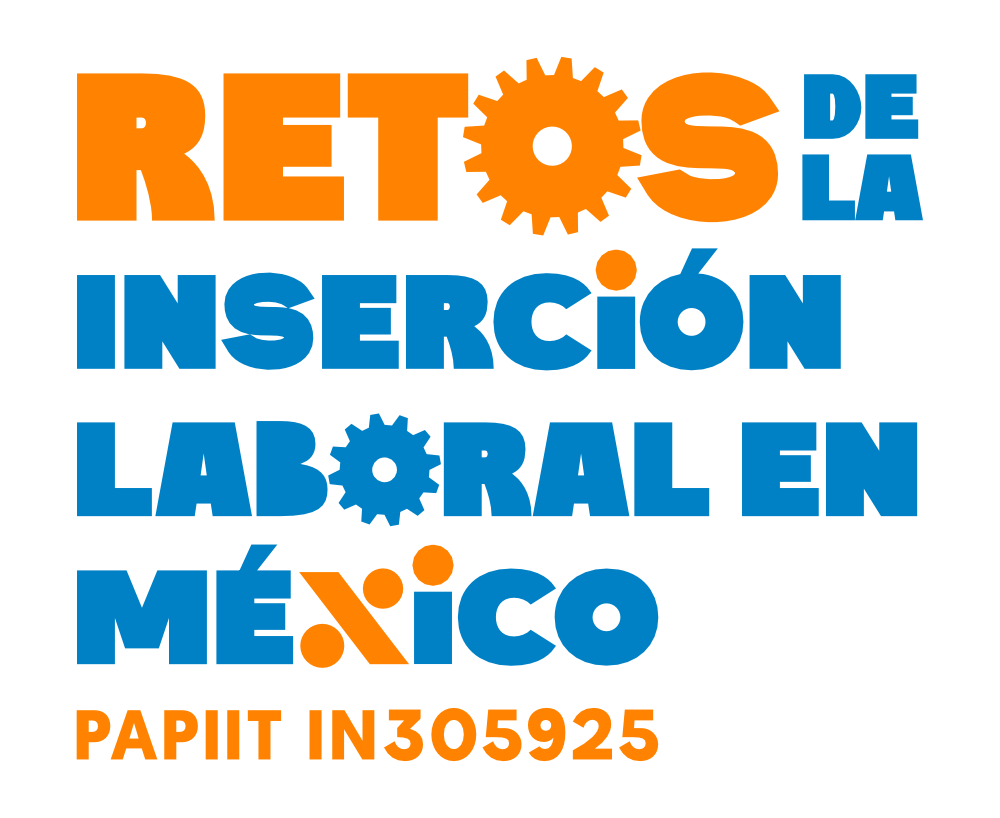

Sobre el proyecto
Retos de la inserción laboral en México

El proyecto PAPIIT IN305925 tiene como propósito estudiar cómo han cambiado las trayectorias laborales en México durante el periodo 2005–2025. Nos enfocamos en identificar los principales retos de la inserción laboral en un mercado caracterizado por la heterogeneidad y la desigualdad
Objetivo general
Determinar los cambios en las trayectorias del mercado laboral mexicano durante el periodo 2005–2025, considerando las desventajas de grupos poblacionales específicos —mujeres, jóvenes, personas trabajadoras rurales y adultos mayores— y analizando cuatro dimensiones clave: inestabilidad, desajuste educativo, trabajo no remunerado y heterogeneidad de ocupaciones ## Objetivos específicos
- Analizar la evolución de la inestabilidad laboral (entradas, salidas e intermitencias) en los últimos veinte años.
- Estudiar la inadecuación educativa (horizontal y vertical) de la población ocupada en México.
- Identificar la evolución de las condiciones de las principales ocupaciones y su heterogeneidad.
- Examinar el papel del trabajo no remunerado en la inserción laboral femenina.
- Reconocer cómo han evolucionado las desigualdades entre grupos poblacionales en términos de condiciones laborales
Metodología
El proyecto utiliza la Encuesta Nacional de Ocupación y Empleo (ENOE), que cumple veinte años de aplicación continua. Mediante el análisis de secuencias, se estudian las trayectorias laborales como procesos completos, complementadas con modelos de regresión para identificar cambios estructurales en distintos periodos (crisis de 2008, pandemia de 2020, reformas laborales)
Productos esperados
- Un libro colectivo: Retos de la inserción laboral en México en las últimas dos décadas.
- Artículos en revistas arbitradas.
- Un seminario permanente y un curso de actualización sobre el uso de la ENOE.
- Una shiny-app interactiva para consultar los 76 paneles armonizados de la ENOE.
- Un paquete en R para procesar los 76 paneles armonizados de la ENOE.
- Este sitio web, como espacio de difusión de resultados y recursos
Equipo
El proyecto es coordinado por Ana Ruth Escoto Castillo (FCPyS–UNAM) y cuenta con la participación de académicos y académicas de la UNAM, El Colegio de México, El Colegio Mexiquense y la Universidad Autónoma del Estado de México, entre otras instituciones.
Diseño
Logo y dseño de marca por Poly Espitia